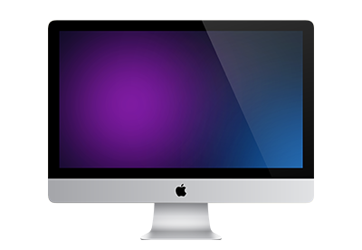
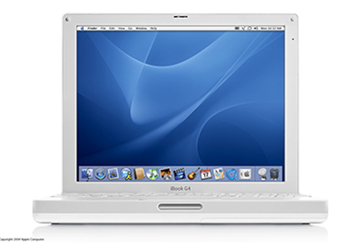
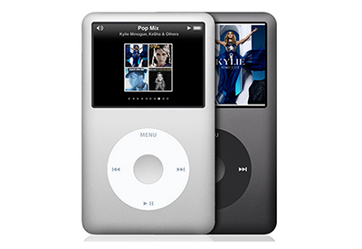
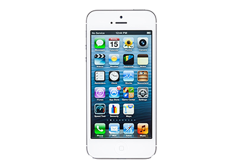

Mac
 Wir sind an die Grenzen gegangen. Um sie zu erweitern. Wenn du dich vor einen iMac setzt, geschieht etwas Unglaubliches: Die Welt um dich herum scheint zu verschwinden, und du verlierst dich völlig in diesem großen, wunderschönen Display. Für genau dieses visuelle Erlebnis haben wir jedes Hindernis überwunden, jedes Detail überdacht und den iMac auf unglaubliche Weise weiterentwickelt.
iBook
ibook
iBooks eignet sich hervorragend zum Laden und Lesen von Büchern. Aus dem integrierten iBooks Store können Sie rund um die Uhr Bücher laden – vom neuesten Bestseller bis hin zu beliebten Klassikern. Durchsuchen Sie das schön gestaltete Bücherregal Ihrer Bibliothek und tippen Sie auf ein Buch, um es zu öffnen. Blättern Sie die Seiten per Fingertippen oder einer Streichbewegung um und kennzeichnen Sie wichtige Passagen mit Lesezeichen oder fügen Sie Notizen hinzu.
iPod
iPod
Im dünnsten und leichtesten iPod touch steckt mehr Spaß pro Millimeter. Er ist noch leistungsstärker als je zuvor. Egal, ob du Spiele spielst, Musik hörst oder einfach nur Spaß damit hast. Und auf dem 4" Retina Display sieht das alles einfach großartig aus.
Der dünnste, leichteste iPod touch aller Zeiten.
Zum ersten Mal ist der iPod touch aus dem gleichen eloxierten Aluminium hergestellt wie ein MacBook. Und er wird auf die gleiche Art produziert: gefräst aus einem einzigen Stück Aluminium. Als Erstes wird dir auffallen, wie leicht der iPod touch ist. Dann das extrem gelungene Finish. Und dann all die anderen Details – wie die präzise gefertigten abgeschrägten Kanten. Für den iPod touch wird Aluminium mit einem der höchsten Festigkeitswerte überhaupt verwendet. Er sieht also nicht nur gut aus und fühlt sich fantastisch an. Er ist auch hart genug für viele Nächte unterwegs.
iPhone
 Das iPhone ist eine im Jahr 2007 eingeführte Smartphone-Reihe des amerikanischen Unternehmens Apple.Es wird weitgehend über den Multi-Touch-Bildschirm gesteuert. Die Hardware und Software des iPhone sind eng mit firmeneigenen Diensten verknüpft, sodass eine einfache Bedienung möglich ist. Die Merkmale des iPhone hatten maßgeblichen Einfluss auf die Gestaltung von Smartphones. Bislang wurden acht Gerätegenerationen vorgestellt; die aktuellen Versionen erschienen im September 2014 – das iPhone 6 und iPhone 6 Plus.